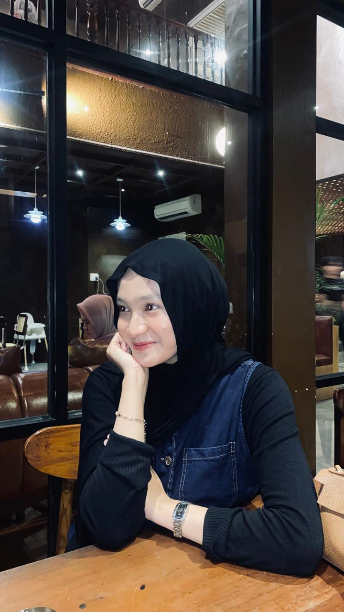

Foto Profil

📝 Tentang Saya
Halo semuanya! Perkenalkan nama saya Cindy Permata Sari
. Saya lahir di Perbaungan pada tanggal 10 Januari 2007 .
Saat ini saya sedang menjalani kuliah dan menjadi Mahasiswa semester 4
di sebuah Universitas Muhammadiyah Sumatera Utara di Medan dengan jurusan Sistem Informasi.
Saya memiliki ketertarikan yang besar dalam bidang teknologi,
terutama web development dan artificial intelligence.
Saya selalu bersemangat untuk belajar hal-hal baru dan mengembangkan
keterampilan saya.
📋 Data Pribadi
- Nama Lengkap: Cindy Permata Sari
- Tempat, Tanggal Lahir: Perbaungan, 10 Januari 2007
- Alamat: Kuala Beringin
- Status: Belum Menikah
- Agama: Islam
- Kewarganegaraan: Indonesia
🎨 Hobi & Minat
- Programming dan coding
- Desain Grafis
- Editing Video
- Menonton Film
- Travelling
🎓 Riwayat Pendidikan
-
MIS ISLAMIYAH KUALA BERINGIN (2012 - 2018)
-
MTS ISLAMIYAH LONDUT (2018 - 2021)
-
SMA NEGERI 1 KUALUH HULU (2021 - 2024)
-
UNIVERSITAS MUHAMMADIYAH SUMATERA UTARA (2024 - Sekarang)
💻 Keterampilan
- Programming Languages: HTML, JavaScript, Python, Java
- Database: MySQL, MariaDB
- Tools: Git, VS Code, Linux
- Languages: Indonesia (Native), English (Advanced)
💼 Pengalaman Akademik
- Algoritma dan Pemrograman(Python)-Semester 1
Membuat program dan pencatatan dan pengelolaan tugas menggunakan Python
- Sistem Informasi Manajemen(Draw.io)-Semester 3
Menyusun Flowchart, ERD, dan DFD untuk menggambarkan alur kerja, hubungan data, serta proses yang terjadi dalam sistem
📞 Kontak Saya
📱 Social Media
Instagram